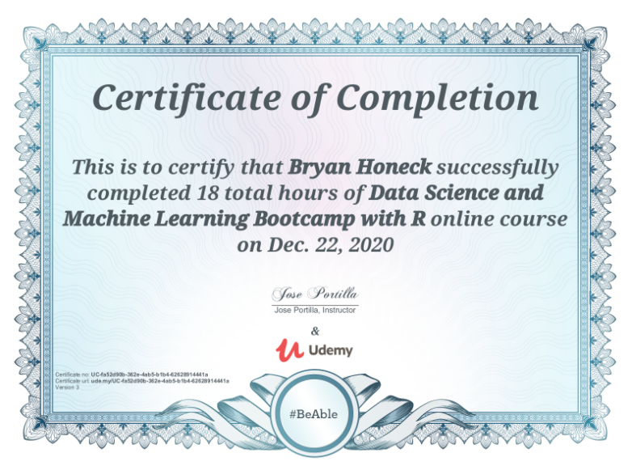
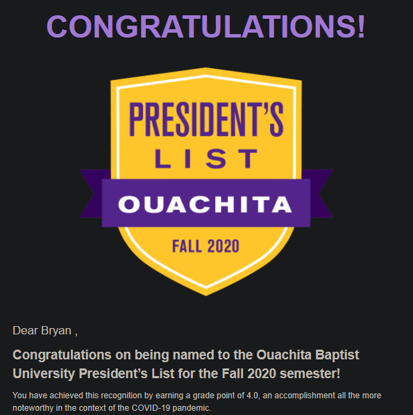
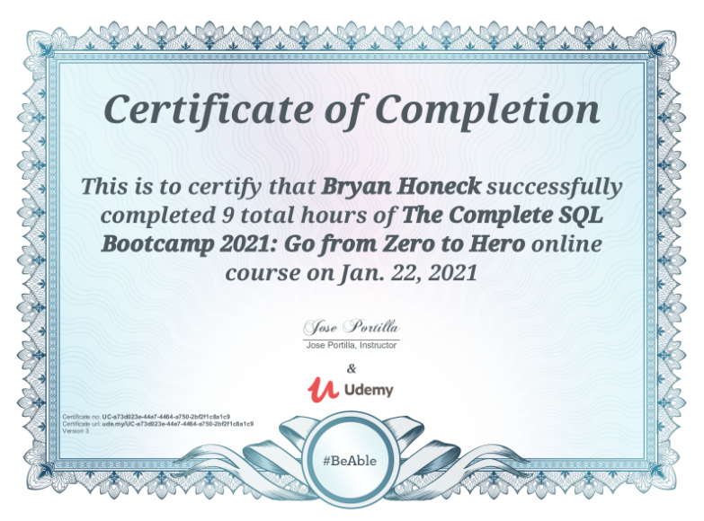

Bryan Honeck: Data Scientist
This is a collection containing most of my projects that I have worked on to further my education in data science and machine learning. I have worked on the majority of these projects for purposes outside of the classroom. I put this site together in order to present my works in a format that is readily available for those interested. As I progress and build more projects, I plan to add them to the project list tab accordingly.
Purpose
I am an upcoming graduate from Ouachita Baptist University with a Bachelor's degree in both Applied Mathematics and Computer Science. I have a passion for solving data science problems by visualizing data, implementing machine learning algorithms, and reporting observations that could help tell a story that lies within data. I enjoy learning new skills and applying them to my school and work life. I look forward to meeting and working with others who share the same passion for data science as I advance my career in the field.
Relevant Courses
- Programming Languages
- Data Structures
- Database Theory
- Algorithms
- Differential Equations
- Computer Org
- Probability & Statistics
- Linear Algebra
- Abstract Algebra
- Computer Science Capstone
Recent Awards/Certificates Earned
-
Data Science and Machine Learning Bootcamp with R, taught by Jose Portilla on Udemy

-
Fall 2020 Ouachita President's List

-
The Complete SQL Bootcamp 2021: Go from Zero to Hero, taught by Jose Portilla on Udemy
